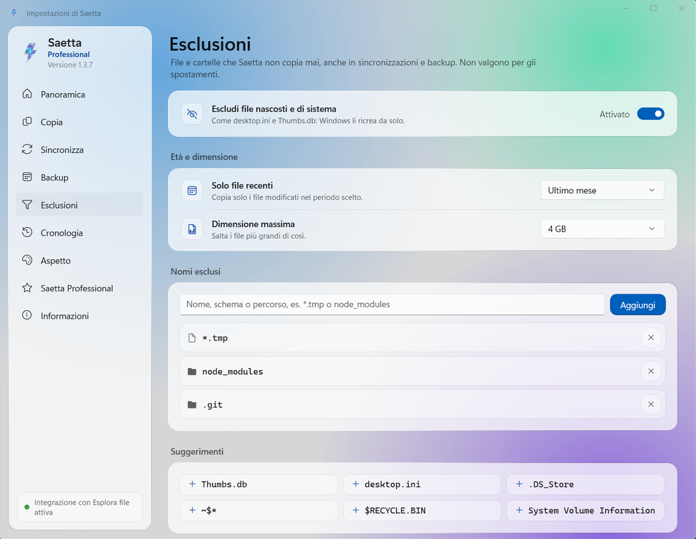

Copia, sposta, elimina.Alla velocità del tuo disco.
Saetta è il programma di copia per Windows che lavora dentro Esplora file: copia migliaia di file fino a 25 volte più veloce, verifica che ogni copia sia identica all'originale e non si ferma per un file bloccato.
Saetta prende il posto della copia di Windows nelle operazioni in cui è lenta. Non cambia il modo in cui lavori: selezioni i file in Esplora file, li copi e li incolli come sempre. Il resto lo fa un motore di copia scritto da zero.
Veloce
Grazie a un motore dedicato, ottimizza ogni trasferimento adattandosi alle caratteristiche fisiche di SSD, dischi rigidi, unità USB e schede SD.
Affidabile
Se un file risulta bloccato, Saetta non si arresta: effettua nuovi tentativi, completa il resto della coda e a fine copia ti segnala esattamente quali file non sono stati trasferiti.
Verificata
Ogni file copiato viene riletto dal disco e confrontato con l'originale, così che l'integrità sia garantita.
Cosa fa Saetta
Le funzioni principali, una per una.
Copie ultraveloci
Esplora file copia un file dopo l'altro. Saetta può copiare i file parallelamente e decide le modalità in base al supporto.
24,7×più veloce di Esplora file con 20.000 file piccoli: 7,7 secondi invece di 3 minuti e 11.
Saetta compare nel menu contestuale di Windows. Se attivata l'integrazione, anche Ctrl+V, il trascinamento dei file e Canc avviano Saetta.
Copia, Taglia, Incolla ed Elimina
Copia in… e Sposta in…, anche in più cartelle insieme
Nelle cartelle protette compare solo la richiesta di Windows
Verificata, file per file
Al termine della copia Saetta rilegge ogni file dal disco, ne calcola l'impronta con appositi algoritmi e la confronta con quella dell'originale. Se anche un solo byte è diverso il file viene segnalato.
Come funziona la verifica
OriginaleRelazione.docxxxHash3 · 9F2C 81D0 E41A
=
CopiaRelazione.docxxxHash3 · 9F2C 81D0 E41A
Identico all'originale

Copia solo quello che serve
Scegli esattamente cosa copiare filtrando per nome, tipo di file, dimensione o data, ed escludi in automatico file nascosti, temporanei o intere cartelle.
Tutte le funzioni
Quelle con il bollino PRO richiedono la licenza Saetta Professional.
Copia ultrarapida
Copia file e cartelle con un motore proprietario che è fino a 25 volte più veloce di Esplora file.
Verifica rapida dell’integrità
Effettua la verifica dell’integrità di ogni file copiato.
Eliminazione rapida
Elimina migliaia di file in pochi secondi con un motore di eliminazione dedicato.
Gestione dei duplicati
Se un file esiste già, scegli se tenere entrambe le versioni, sostituirlo o saltarlo.
Gestione degli errori
Un file bloccato viene riportato con la causa e può essere ricopiato singolarmente.
Esclusioni
Escludi file e cartelle per nome, tipo, data o dimensione.
Shell Integration
Copia, sposta ed elimina dal menu del tasto destro di Esplora file. Se vuoi, anche Ctrl+V, il trascinamento dei file e il tasto Canc funzionano con Saetta.
Azioni al termine
Finita la copia, Saetta può sospendere, ibernare o spegnere il PC.
Cronologia e statistiche
Ogni operazione registrata, con dati trasferiti, durata e velocità media.
Verifica dell’integrità con oltre 70 algoritmiPRO
BLAKE3, SHA-256, SHA-3, Whirlpool, CRC, TIGER e molti altri ancora.
Ripresa dopo un’interruzionePRO
Se il PC si spegne durante una copia, alla riaccensione Saetta la riprende e controlla i file già copiati.
SincronizzazionePRO
Tieni allineate due cartelle, quando vuoi tu: con Specchio la destinazione diventa identica all'origine, con Solo aggiunte copi i file nuovi e modificati senza eliminare nulla. Con l'anteprima vedi prima cosa verrà copiato ed eliminato.
Backup pianificatiPRO
Ogni giorno, settimana, mese o anno, anche a Saetta chiusa. Se il disco non è collegato, ricevi un avviso.
File di checksumPRO
Crea e verifica file .sha256, .md5, .b3, .sfv e altri formati.
ReportPRO
Al termine di ogni lavoro genera un report HTML o CSV con l’esito di ogni file copiato.
Comando finalePRO
Esegui un comando o uno script al termine di ogni lavoro.
Eliminazione sicuraPRO
I file vengono eliminati senza lasciare alcuna traccia: nessun software di recupero sarà in grado di ritrovarli.
Limite di velocitàPRO
Rallenta la velocità delle copie per lasciare libero il disco o la rete mentre lavori.
Saetta contro la copia di Windows
Abbiamo misurato tre operazioni comuni sullo stesso PC e con gli stessi file, tutte sullo stesso SSD. Ogni barra indica il tempo impiegato: più è corta, prima finisce l'operazione.
Copia di 20.000 file piccoli
File da 64 KB, 1,3 GB in totale
24,7×più veloce
Esplora file3 min 11 s
Saetta7,7 s
File al secondo
105 → 2.594
Tempo risparmiato
3 min 3 s
Eliminazione di 20.000 file
Con il motore di eliminazione parallelo di Saetta
4,6×più veloce
Esplora file13,0 s
Saetta2,8 s
File al secondo
1.540 → 7.143
Tempo risparmiato
10,2 s
Copia di 12 GB in file grandi
Tre file da 4 GB, come film o immagini disco
−11%di tempo
Esplora file7,9 s
Saetta7,0 s
Velocità media
1,64 GB/s → 1,84 GB/s
Tempo risparmiato
0,9 s
Quante volte più veloce, per dimensione dei file
La stessa copia fatta con Esplora file e con Saetta, con file di dimensioni diverse. Sotto ogni barra, i tempi dei due programmi.
10.000 file da 4 KBnote, codice sorgenteEsplora file 1 min 34 s · Saetta 4,1 s22,7×
20.000 file da 64 KBdocumenti, iconeEsplora file 3 min 11 s · Saetta 7,7 s24,7×
10.000 file da 1 MBimmagini web, PDFEsplora file 1 min 46 s · Saetta 6,4 s16,5×
640 file da 16 MBfoto RAW, musicaEsplora file 15,4 s · Saetta 9,3 s1,7×
40 file da 256 MBvideo breviEsplora file 6,3 s · Saetta 5,7 s1,1×
3 file da 4 GBfilm, immagini discoEsplora file 7,9 s · Saetta 7,0 s1,1×
Portatile con processore Intel Core i7-9750H (6 core), 16 GB di RAM e SSD Samsung 990 PRO da 2 TB: origine e destinazione sullo stesso SSD, con gli stessi file per entrambi i programmi. Ogni prova è stata ripetuta tre volte per programma: indichiamo il valore centrale. Il tempo comprende l'avvio di Saetta e la scrittura completa dei dati sul disco; nell'eliminazione entrambi i programmi cancellano i file in modo definitivo, senza passare dal Cestino. La gara è accelerata e mantiene le proporzioni reali dei tempi.
Inizia gratis. Passa a Professional quando ti serve.
Saetta Professional si attiva direttamente dall'app, tramite il Microsoft Store. Il prezzo è stabilito dal Microsoft Store e può variare in base al paese.
Saetta
0 €Per sempre
Velocità piena e tutte le funzioni di base, senza limiti di file o di dimensione.
Copie veloci, senza limiti
Integrazione in Esplora file
Verifica dell’integrità con xxHash3
Eliminazione rapida
Copia in… e Sposta in…, esclusioni, cronologia
Saetta Professional
29,99 €Acquisto unico
Una volta sola, nessun rinnovo. La licenza è legata al tuo account Microsoft e vale sui PC in cui lo utilizzi.
Tutto il gratuito, più:
Verifica con oltre 70 algoritmi e file di checksum
Ripresa dopo un’interruzione
Sincronizzazione e backup pianificati
Report, comando finale, eliminazione sicura, limite di velocità